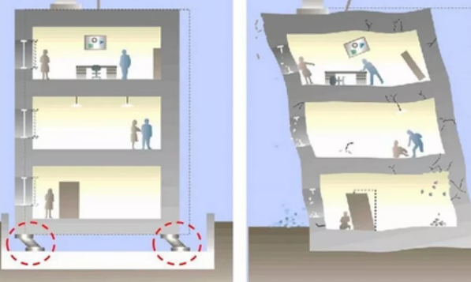

DEPREM HAKKINDA...
Depremin büyüklüğü ve şiddeti aynı şey mi?
Depremin şiddeti ve depremin büyüklüğü aynı kavramlar değildir. Depremin gücü iki yolla ölçülüyor. Bunlardan birisi depremin “şiddeti” diğeri ise “büyüklük”lüğüdür.
AFAD'a göre depremin şiddeti ve büyüklüğü şu şekilde tarif ediliyor:
"Depremin şiddeti; herhangi bir derinlikte olan depremin, yeryüzünde hissedildiği bir noktadaki etkisinin ölçüsü olarak tanımlanmaktadır. Diğer bir deyişle yapılar, doğa ve insanlar üzerindeki etkilerinin bir ölçüsüdür. Bu etki, depremin büyüklüğü, odak derinliği, uzaklığı, yapıların depreme karşı gösterdiği dayanıklılık dahi değişiklik gösterebilmektedir. Şiddet depremin kaynağındaki büyüklüğü hakkında doğru bilgi vermemekle beraber, deprem dolayısıyla oluşan hasarı yukarıda belirtilen etkenlere bağlı olarak yansıtır." "Depremin büyüklüğü; deprem sırasında açığa çıkan enerjinin bir ölçüsü olarak tanımlanmaktadır. Amerika Birleşik Devletlerinden Prof. C. Richter tarafından 1930 yıllarında bulunan bir yöntemle depremlerin aletsel bir ölçüsü olan “Magnitüd” tanımlanmıştır. Prof. Richter, episantrdan 100 km. uzaklıkta ve sert zemine yerleştirilmiş özel bir sismografla kaydedilmiş zemin hareketinin mikron cinsinden ölçülen maksimum genliğinin 10 tabanına göre logaritmasını bir depremin “magnitüdü” olarak tanımlamıştır. Bugüne dek olan depremler istatistik olarak incelendiğinde kaydedilen en büyük magnitüd değerinin 8.9 olduğu görülmektedir. (31 Ocak 1906 Colombiya-Ekvator ve 2 Mart 1933 SanrikuJaponya depremleri)
SİSMİK İZOLATÖR NEDİR?
Sismik izolatör, yapıya gelen deprem, rüzgar vb. yüklerin azaltılmasına yarayan sistemdir. Sismik izolasyon sistemleri zemin ile yapının tabanı arasına esnek enerji sönümleyici elemanlar yerleştirerek zeminden yapıya aktarılan deprem kuvvetlerinin azaltılmasına yardımcı olan araçlardır. Sismik izolasyonu olmayan yapı kendi ağırlığının 1/10'u kadar yatay yük taşıyabilir. Eğer bu değerden daha fazla bir yük gelirse yapıda kalıcı deformasyonlar oluşur ve kolon-kiriş birleşim noktalarında kırılmalar başlar. Ancak sismik izolasyonu olan yapılar bu değerlerin çok üstüne çıkabilir. Çünkü sismik izolatörler gelen yatay yükü azaltır, deprem sırasında üzerindeki yapının sarkaç misali küçük salınımlar yapmasını sağlar. Oluşan dinamik sürtünme kuvveti ile izolatörün konkav geometrisi deprem enerjisinin sönümlenmesini sağlar. Sismik izolatörler deprem anında yapıya aktarılan dinamik kuvvetleri ve buna bağlı deplasmanları %80 – %90 oranında azaltmakta ve yapıyı deprem kuvvetlerine karşı izole etmektedir.
DEPREM İZOLATÖR SİSTEMİNİN YARARLARI
- Yüksek düzeyde can güvenliği
- Aynı oranda minimum düzeyde bakım gerekliliği
- -Araştırma ve geliştirmeye ait projelerin korunması
- Yapıda bulunan mimari ve taşıyıcı elemanlarda minimum hasar
- Şiddetli deprem sonrasında hemen kullanım olanağı
- Köprü ve viyadükler de hasar görmeksizin kullanımına devam edilmesi
- -Ulaşım yapılarında devam eden süreklilik
- Yapı içerisinde yer alan eşya ve cihazların korunması